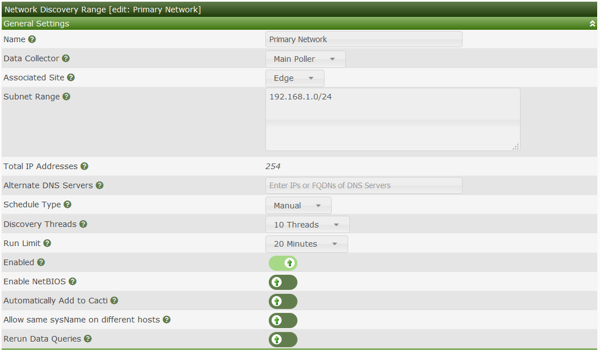

This section will describe Automation Networks in Cacti.
Adding a network to scan in the automation plugin is easy on the main console click Automation once on the below page click the + on the top right of the page
you will now see the below page for example if you want to scan 192.168.1.0/24 you would enter that in the subnet range textbox
you will need to note the subnet in CIDR format
Other important options are Schedule type - How often you want to scan this subnet for devices Discovery threads - How many proccessess to spawn during the scan Max Runtime - to prevent the scan from running indefinetly Automatically add to cacti - If a device is SNMP reachable and matches a rule from this subnet the device will be added Netbios - Attempt to resolve the hostname by netbios
Ensure after you are done adding your network to enable the rule and save

Ensure that if you have a SNMP rule for this part of the network to select the SNMP option set this will tie the network to the SNMP rules

To begin the scanner click on the bottom right drop down and select "Discover Now" this will start the discovery

Copyright (c) 2004-2019 The Cacti Group